In this homework, I've experimented with different rasterization methods for objects, utilized transform matrices to make changes to scenes, and developed pixel and level sampling algorithms for texture mapping.
This homework has taught me about the different ways graphic engineers render shapes and textures for objects, along with tricks used in games to give images more detail and look sharper. These different rasterization
tools allow for more complex texture rendering and smoother scenes.
Task 1: Drawing Single-Color Triangles
For my implementation of drawing single color Triangles, I decided to follow the general formula for a Three-line test discussed in lecture. I made a helper function to calculate L, the line equation, for the 3 given points. If L == 0, I use rasterize_line between each given point. Then, I set a bounding box around the triangle, then iterate through each pixel center in the box and run a line test between the 3 lines and each point. if each line test results in a number > 0, I color the pixel. This is essentially the same as just checking every sample in a bounding box around a triangle, however just taking 1 sample per pixel to determine a color, and is therefore about the same runtime.
Here is a screenshot of the overall rendered image, and an upclose of one of the triangles. Right Now the thicker triangles look a lot better than the thinner ones, but overall each triangle is still drawn with rough edges.
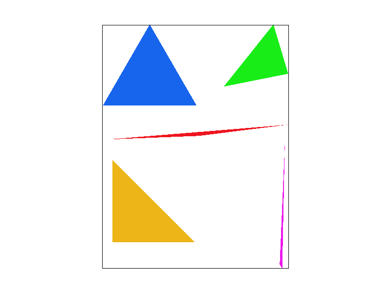
test4.svg
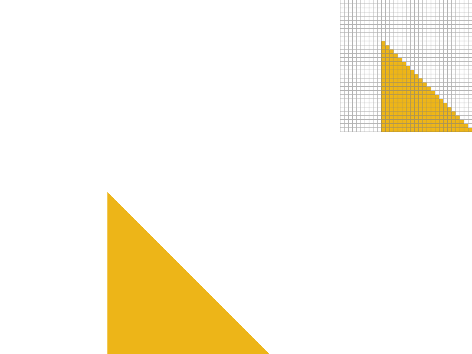
Upclose of the Yellow Triangle.
Task 2: Antialiasing by Supersampling
Before implementing any supersampling, I wanted to focus on adjusting buffer memory. Now, each pixel stores N samples, where N is our sample rate. I first made significant changes to set_sample_rate() and set_framebuffer_target() by resizing sample_buffer to:
\[width * height * sample_rate\]
I then changed resolve_to_framebuffer() to sum the color of each pixel in a sample, averaged it and used its mean to determine the color of the sample. Finally, I changed fill_pixel to now go through every pixel in a sample and color it in (and added guardrails for ensuring it didnt mess with the black border)
The significant change to rasterize_triangle() is now it will iterate through every subpixel in each pixel in the bounding box, perform the 3-line test, and color the subpixel in the sample buffer.
Supersampling is very useful as it allows us to produce much sharper images by examining the entire pixel instead of basing a color off its center. Antialiasing allows for the boundary pixels to only have some subsamples color, giving it a partial color that makes edges look much smoother.
test4.svg with sample_rate = 1
test4.svg with sample_rate = 4
test4.svg with sample_rate = 9
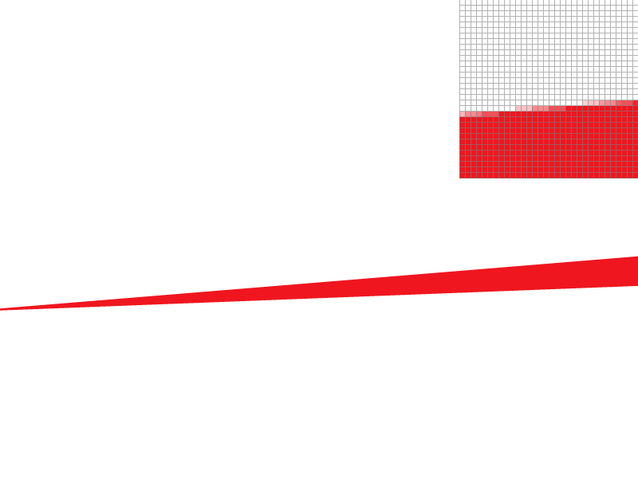
test4.svg with sample_rate = 16
Task 3: Transforms
After completing my implementation for 3x3 translation, scaling, and rotation matrices, I decided to have my robot pose like he's meditating. I first tested my matrices with the head by enlarging it. I thought it contributed to the final product being funny so I kept it.
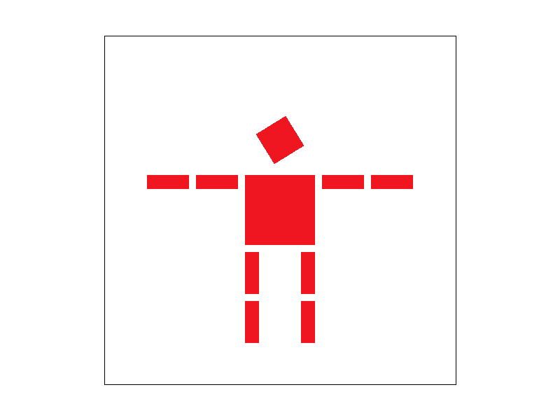
Fully Rendered Robot
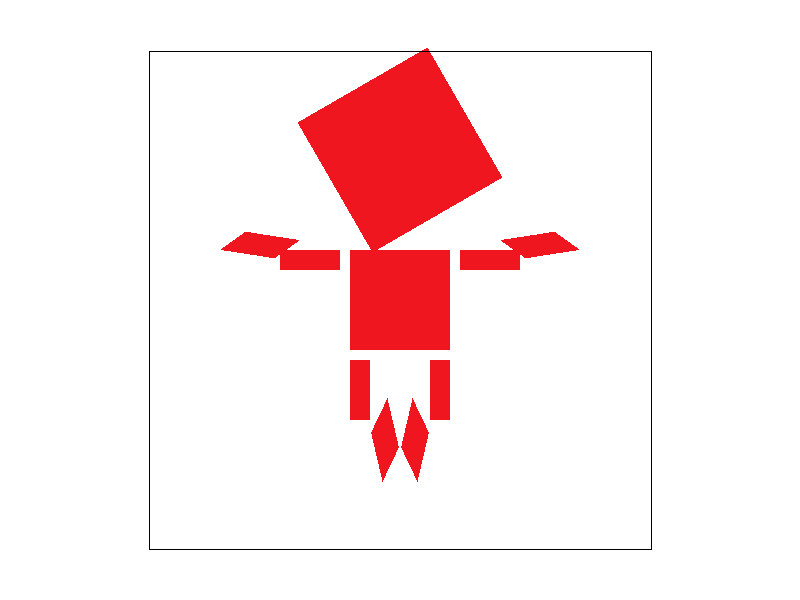
Robot meditating so hard that his inflated head carries him like a hot air balloon
Task 4: Barycentric coordinates
Barycentric Coordinates can be used in tandem with our previous rasterization methods to incorporate multiple colors into the rasterization process.
Within the supersampling we can express the subpixels as a weighted sum of 3 colors:
\[ (x,y) = \alpha *A + \beta*B + \gamma*C \]
\[ 1 = \alpha; + \beta; + \gamma; \]
We can then solve for \( \alpha \), \( \beta \), and \( \gamma \):
\[
\alpha =
\frac{-(p_x - x_B)(y_C - y_B)
+ (p_y - y_B)(x_C - x_B)}
{\text{Area}}
\]
\[
\beta =
\frac{-(p_x - x_C)(y_A - y_C)
+ (p_y - y_C)(x_A - x_C)}
{\text{Area}}
\]
\[
\gamma = 1 - \alpha - \beta
\]
Where Area is the area of the shape method that we determined in Task1. The weighted sum should give us a subcolor to assign the subpixel, which will be some blend of red, green, or blue. We see this in the image below of the triangle, where I assigned each corner a color and all points in between will be varied blends of the 3 colors.
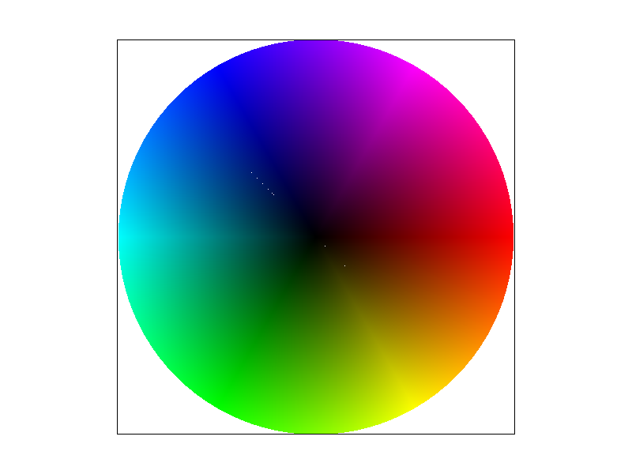
test7.svg
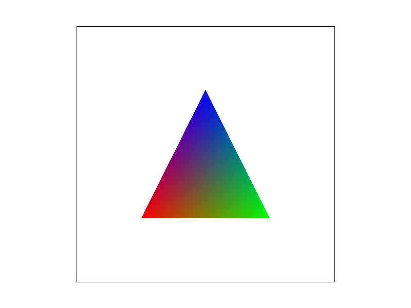
Color-Blended Triangle Variant
Task 5: "Pixel sampling" for texture mapping
Pixel sampling is a method to get a texture color for a piece of an image given texture coordinates (u,v) at a given mipmap level.
This task compares the effectiveness of 2 different texture sampling methods: Nearest sampling and Bilinear Sampling. Both sampling methods will be given a level and uv coordinate, and return a texel relative to that coordinate at the given level.
The difference is that nearest_sampling will return the single closest texel to the coordinate (u,v) at the level. Bilinear sampling will find the 4 closest sample locations to perform a bilinear interpolation.
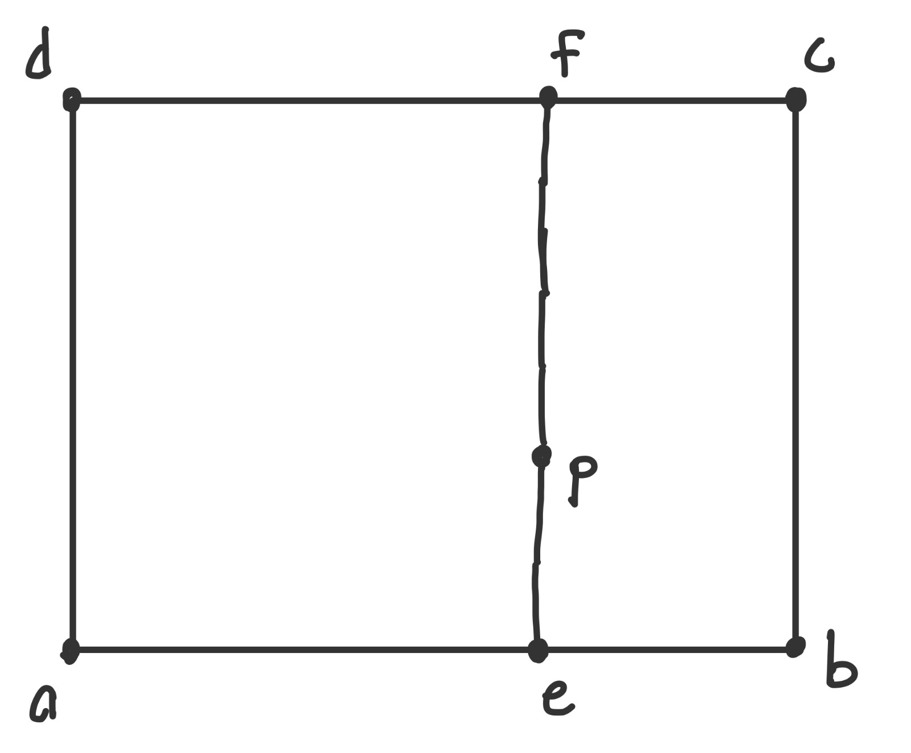
Bilinear Interpolation
This will use the 4 points (a,b,c,d) to find a point above and below the given coordinate (e,f), which can give us a more precise texel (p) at that location.
\[
\mathbf{e} = \mathbf{a} + \alpha(\mathbf{b} - \mathbf{a})
\]
\[
\mathbf{f} = \mathbf{d} + \alpha(\mathbf{c} - \mathbf{d})
\]
\[
\mathbf{p} = \mathbf{e} + \beta(\mathbf{f} - \mathbf{e})
\]
In this case, \( \alpha \) and \( \beta \) represent the offset of (u,v) within the texel, or dx and dy. Below are a close up shots of a distorted Campeneille to show the differences in edge quality.
Notice how the overall image quality looks a lot better in the bilinear examples and the upclose pixels of the clock hands make a more distinct shape.
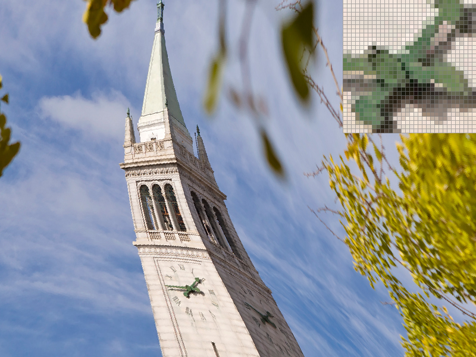
Nearest Sampling with sample_rate = 1
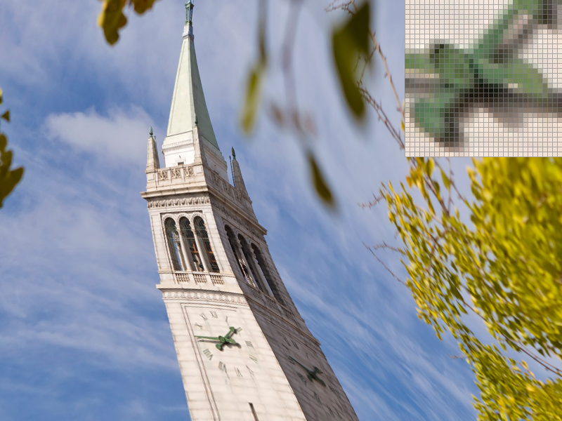
Bilinear Sampling with sample_rate = 1
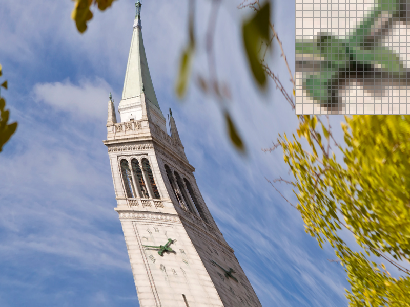
Nearest Sampling with sample_rate = 16
Bilinear Sampling with sample_rate = 16
Task 6: "Level Sampling" with mipmaps for texture mapping
In the previous task, we were sampling from a mipmap level 0. Level sampling will instead sample textures to a level D, where D is a computed value that equates to the "nearest" level or the level that best matches the pixel in texture space.
Each subsequent level after 0 will be lower resolution, so pulling from higher levels will reduce aliasing when textures shrink.
The significant modification to our task5 algorithm is that now when building the sampleParam, we will also find the barycentric Coordinates of (x +1, y) and (x, y + 1) and calculate dx and dy, which is the distance from the barycentric coordinates of (x,y).
Then we compute the following partial derivatives:
\[
\frac{\partial u}{\partial x}, \quad
\frac{\partial v}{\partial x}, \quad
\frac{\partial u}{\partial y}, \quad
\frac{\partial v}{\partial y}
\]
Afterwards we plug in these values into the following equations to find L:
\[
L =
\max \left(
\sqrt{
\left(\frac{\partial u}{\partial x}\right)^2 +
\left(\frac{\partial v}{\partial x}\right)^2
},
\sqrt{
\left(\frac{\partial u}{\partial y}\right)^2 +
\left(\frac{\partial v}{\partial y}\right)^2
}
\right)
\]
\[ D = \log_2(L)\]
We then just pull our textures from the Dth mipmap over the 0 for nearest sampling.
To highlight our current texture mapping methods, I decided to use a distorted image of Eva Unit 13 from my trip to Japan last year. I placed the pixel inspector along the shaft of the spear to highlight the differences.
The Sampling rate was 1 across each image. Changing between nearest and bilinear sampling will result in smoother and more distinct shapes (as shown from task5).
Changing from level 0 to the nearest mipmap level brings pixels making up the spear much closer in color (removed a lot of "shine") but adds a lot more rough edges. using bilinear sampling smooths it out entirely.
Level 0 with Nearest Sampling
Level 0 with Bilinear Sampling
Nearest Level with Nearest Sampling
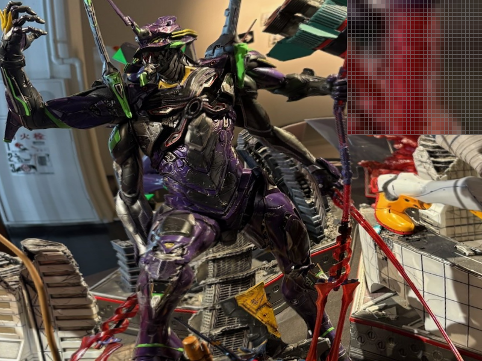
Nearest Level with Bilinear Sampling
Overall, using the near level sampling reduced a lot of the aliasing, yet computationally takes more memory.
On the same note, this homework shows how samples per pixel can also improve the geometry of edges, but also gets computationally more complex when we increase sample sizes and will greatly increase runtimes.
Nearest pixel sampling is the fastest and most memory efficent method for pixel sampling, but produces sharp edges and visible pixels. Bilinear pixel sampling serves to smooth out pixels within the mipmap level, yet will also slow down our runtime.
Ultimately, using these techniques can allow us to control the image quality of different aspects of a image, where we can make certain parts of a scene stand out while taking less time and memory computing pieces that may not be as important to the overall scene.